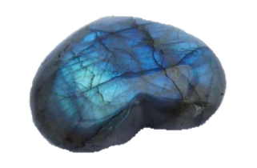
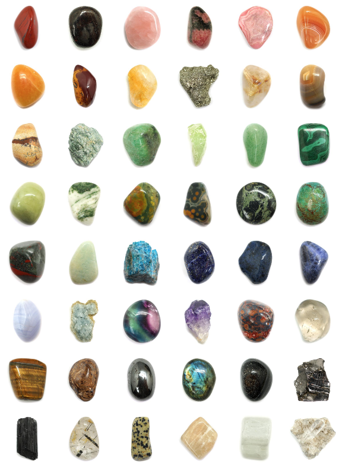

Crystal Magic
Welcome to Crystal Magic!
A tribute to all of the mesmorizing minerals which can be used for healing, mentally, spiritually and physically. Check out different stones along with the corresponding meanings and energies the stone can provide for you. Which of them are calling to you?
Agate
Agate is a stone of strength and courage. This stone helps with the acceptance and to see the truth. Stimulates the digestive system and heals skin disorders.
Chakras:
Third Eye & Crown
Labradorite
Labradorite is a highly mystical and protective stone, it works on all areas of the mind and body. Helps to clear and protect your aura, a stone of transformation raising conciousness and connecting to the universal energy. It's known as the bringer of light and is excellent for meditation by directing energies with more intensity allowing you to connect to your higher self and seek out your spiritual purpose.
Chakras:
Heart, Third Eye & Crown
There is so many different stones that focus on all different areas of the mind and body you can always use a medicine bag to hold your favorite stones, or change out the stones periodically for what ever your needing currently.

Ametrine
Ametrine is for optimism, this tone is a combination of both Amethyst and citrine. Its high energy balances out stress, tension and emotional blockage creating a feeling of well being.
Chakras:
Solar Plexus, Third Eye & Crown
Amazonite
Intuition and hope, Amazonite helps filter outside information through the use of intuition. Amazonite encourages faith, enhances male qualities and physical strength. Healing for the Brain and the Nervous system
Chakras:
Heart
Moonstone
Moonstone is highly aligned to the female energy of the universe and the energy of the moon and its cycles. Its known as the stone of new beginnings and brings insight and intuition. Calms reactions and aids in self analysis. Healing properties calming emotions such as relieving anxiety and stress.
Chakras:
Solar Plexus
Argonite
Patience and Reliability, this stone helps with acceptance and the ability to take on more responsibilty. This is an earth healer grounding stone, deepening your connection to the earth. Healing properties aids in muscle spasms and helps heal bones and discs.
Chakras:
Base
Golden Calcite
Calcite is a strong stone used to help amplify and clense the energy around you. It can bring joy and lightheartedness into your life. It boosts memory, calms the mind, alleviates stress. Healing properties help the organs eliminate toxins, metabolisim
Chakras:
Sacral, Solar Plexus & Crown
Celestite
This stone's gentle, open energy enhances feelings of inner peace opening up your heart and revealing the truth about things. It helps to access the angelic realm as well as urges you towards spiritual development and anlightenment.
Chakras:
Throat & Crown
Citrine
Citrine is said to hold the energy of the sun, enhancing our self esteem, self expression and creativity. This stone attracts abundance and prosperity into our lives.
Chakras:
Solar Plexus & Crown
Desert Rose
All things are possible with Desert Rose, they are said to be carved by the spirits of the american indians. They enhance love and teamwork and help to go for your dreams without restraint and helps to dissolve self imposed restrictions. It can be used to strengthen affirmation of purpose in life.
Chakras:
Crown
Fire Agate
This is a stone of courage protection and strength. Ehancing vigor and positive thinking It has a deep connection to the earth bringing saftey and security with its calming energy. It helps eliminate cravings, addictions and destructive desires.
Chakras:
Solar Plexus, Sacral
Aquamarine
Clarity and purification this stone purifies the body and clarity of the mind. It helps bring closure to unresolved situations. Good for calming and balance, eleviates fears and phobias.
Chakras:
All, Especially the Throat
Jasper Polychronic
Also known as Desert Jasper it represents the earth and is a grounding stone that promotes stability and balance in life. It balances the vibrations and emotional energies of the and is very nurturing. It brings tranquility and wholeness.
Chakras:
Solar Plexus, Sacral & Base